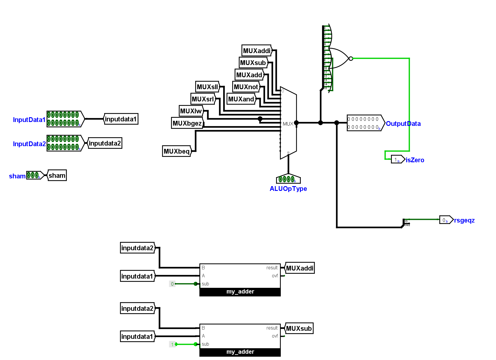
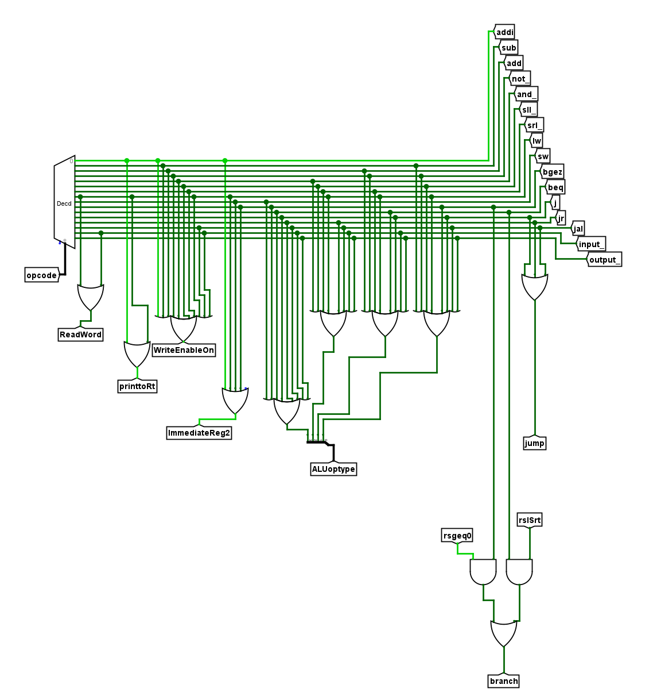
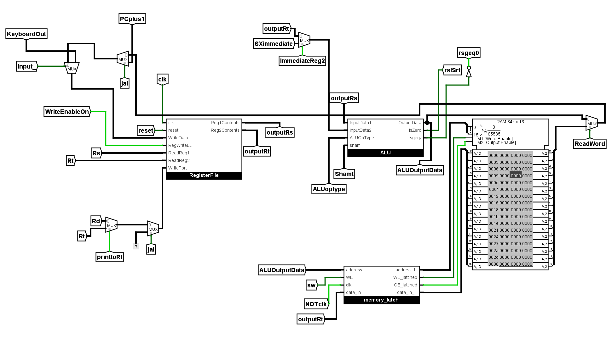
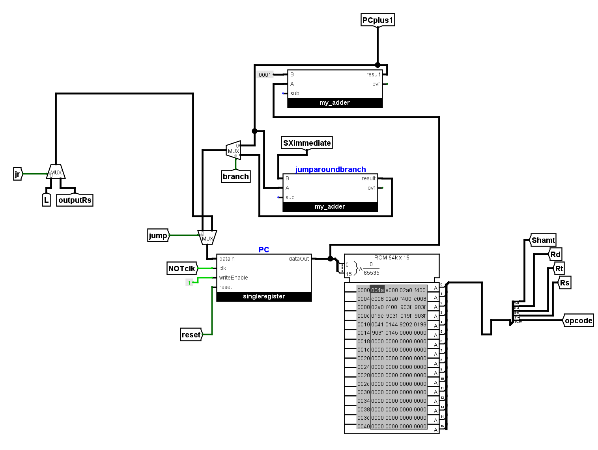
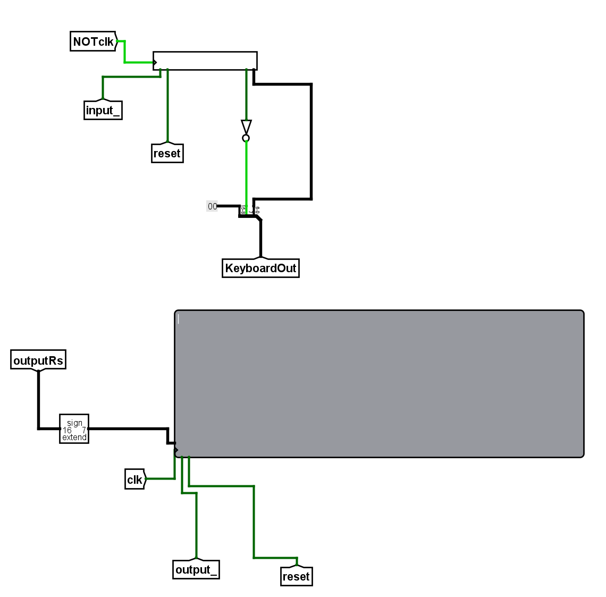

Project overview
The project aims to provide a hands-on experience in CPU design, specifically in the context of MIPS-like RISC architectures. By implementing the architecture in Logisim, it offers a clear, visual approach to understanding how processors execute instructions and handle data. It serves as an educational tool to grasp fundamental concepts in computer architecture and digital logic design.
Key Components
- Logisim-Based Design The entire design is implemented using Logisim, a graphical tool for designing and simulating digital circuits.
- MIPS-like RISC Architecture The CPU follows a 16-bit RISC (Reduced Instruction Set Computing) architecture, designed for simplicity and efficiency.
- Instruction Set The CPU supports a set of instructions typical of MIPS, with most operations executed in a single cycle for clarity and teaching.
- Single-Cycle CPU Design Every instruction completes in one clock cycle in the current implementation to keep the design simple and observable.
- Instruction Execution Pipeline A basic fetch–decode–execute flow is implemented to demonstrate how instructions are fetched, decoded, and executed.
- No Pipelining or Optimizations The project intentionally excludes pipelining and advanced optimizations to remain focused on fundamentals.
Schematic preview

Click to view full CPU schematic (opens full-screen).
Design files & notes
Files: spec PDF, assembler, testbench, and Logisim `.circ`
circ file attached here:
Highlighted features





